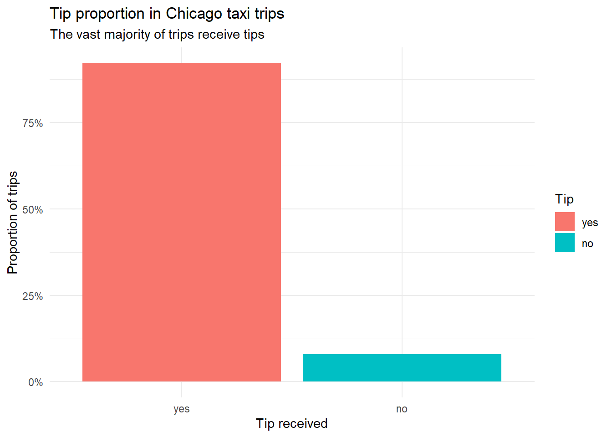
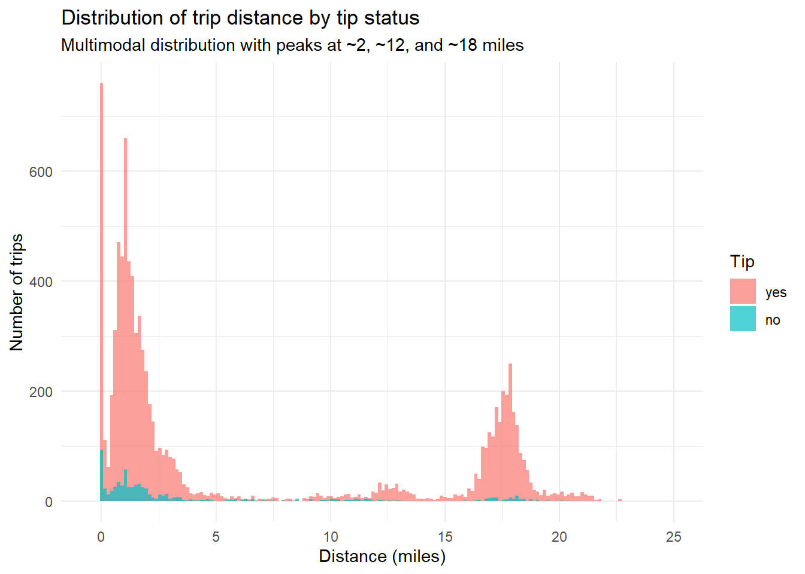
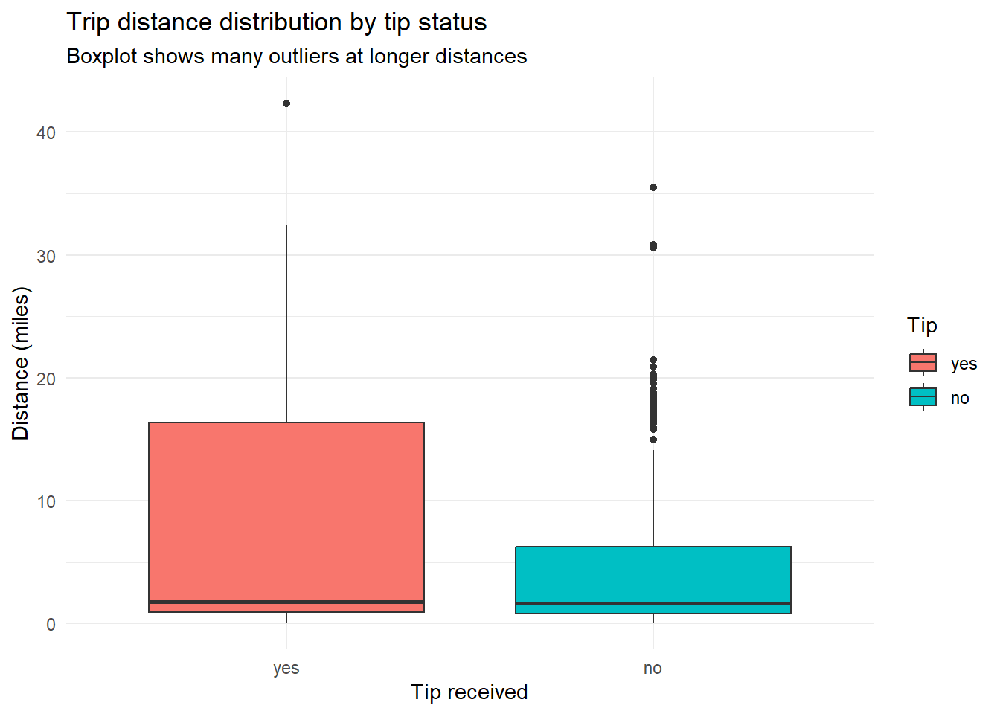
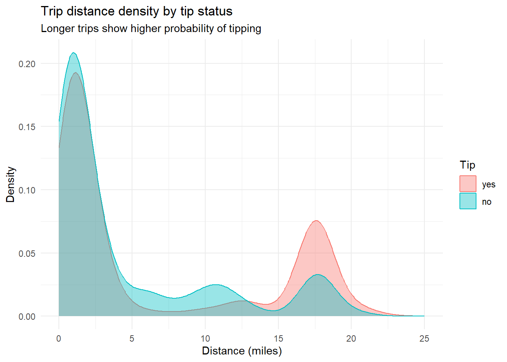
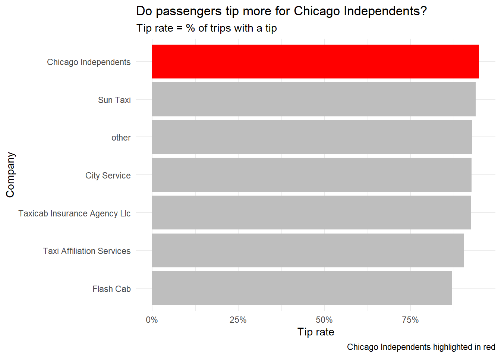
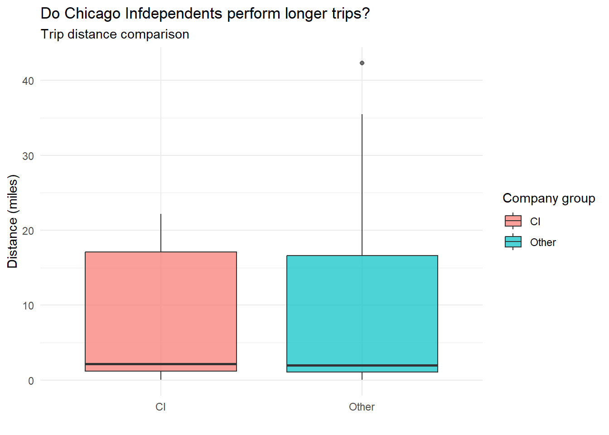
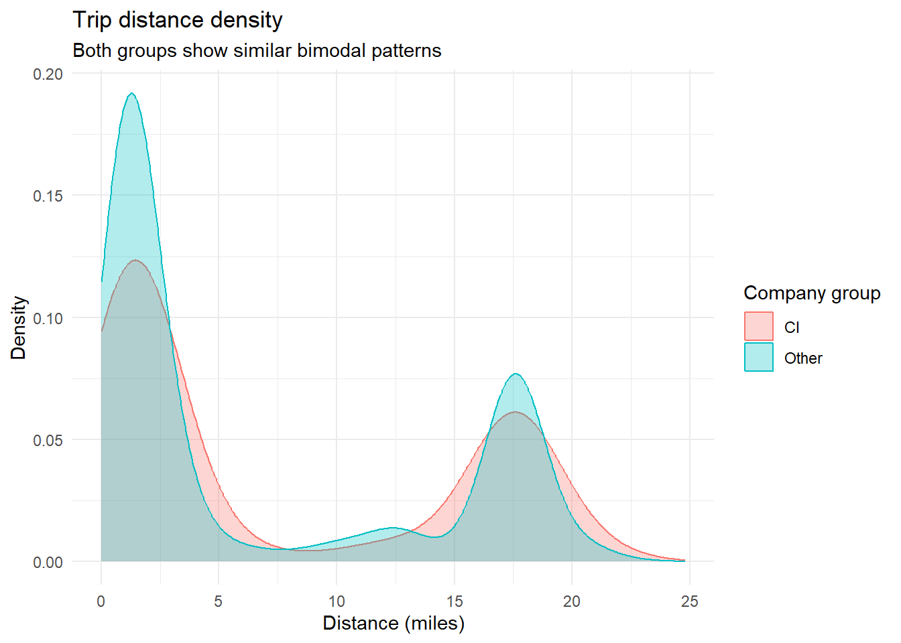
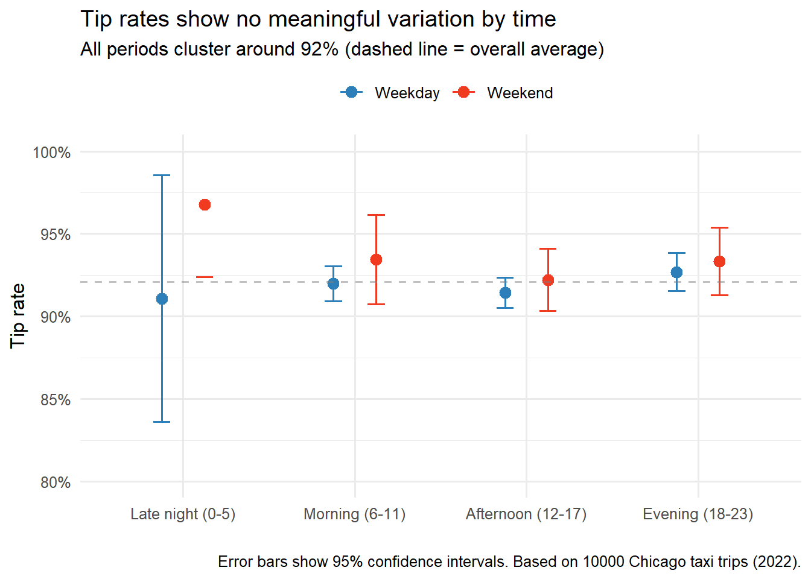

library(tidyverse)
library(tidymodels)
library(scales)
library(ggthemes)Chicago Taxi Analysis
Data Overview
The taxi dataset contains information on a subset of taxi trips in Chicago during 2022.
Below is a snapshot of the dataset:
glimpse(taxi)Rows: 10,000
Columns: 7
$ tip <fct> yes, yes, yes, yes, yes, yes, yes, yes, yes, yes, yes, yes, y…
$ distance <dbl> 17.19, 0.88, 18.11, 20.70, 12.23, 0.94, 17.47, 17.67, 1.85, 1…
$ company <fct> Chicago Independents, City Service, other, Chicago Independen…
$ local <fct> no, yes, no, no, no, yes, no, no, no, no, no, no, no, yes, no…
$ dow <fct> Thu, Thu, Mon, Mon, Sun, Sat, Fri, Sun, Fri, Tue, Tue, Sun, W…
$ month <fct> Feb, Mar, Feb, Apr, Mar, Apr, Mar, Jan, Apr, Mar, Mar, Apr, A…
$ hour <int> 16, 8, 18, 8, 21, 23, 12, 6, 12, 14, 18, 11, 12, 19, 17, 13, …Question 1: Is there a relationship between trip distance and tipping?
Research question: Do passengers tip differently based on how far they travel?
Hypotheses:
Hp1: Longer trips are more likely to receive a tip
Hp2: Shorter trips are cheaper, so passengers might tip more frequently
This question involves exploring the relationship between a continuous variable (distance in miles) and a categorical variable (tip: yes/no).
Initial Exploration: Tip Frequency
First, let’s look at the overall proportion of trips that received tips:
Proportion with Bar plot
taxi |>
count(tip) |>
mutate(perc = n / sum(n)) |>
ggplot(aes(x = tip, y = perc, fill = tip)) +
geom_col() +
scale_y_continuous(labels = percent) +
labs(
title = "Tip proportion in Chicago taxi trips",
subtitle = "The vast majority of trips receive tips",
x = "Tip received",
y = "Proportion of trips",
fill = "Tip"
) +
theme_minimal()
Observation: Most trips in this dataset received a tip.
Summary Statistics
taxi |>
group_by(tip) |>
summarise(
mean_dist = mean(distance, na.rm = TRUE),
median_dist = median(distance, na.rm = TRUE),
sd_dist = sd(distance, na.rm = TRUE),
n = n()
)# A tibble: 2 × 5
tip mean_dist median_dist sd_dist n
<fct> <dbl> <dbl> <dbl> <int>
1 yes 6.37 1.79 7.47 9209
2 no 4.57 1.66 6.00 791Distribution of Trip Distances by Tip Status
Histogram
ggplot(taxi, aes(x = distance, fill = tip)) +
geom_histogram(binwidth = 0.15, alpha = 0.7, position = "identity") +
scale_x_continuous(limits = c(-0.5, 25), breaks = seq(0,50,5)) +
scale_y_continuous(breaks = seq(0, 800, 200)) +
labs(
title = "Distribution of trip distance by tip status",
subtitle = "Multimodal distribution with peaks at ~2, ~12, and ~18 miles",
x = "Distance (miles)",
y = "Number of trips",
fill = "Tip"
) +
theme_minimal()
The histogram reveals a multimodal distribution with four distinct peaks:
Peak 1: ~0 miles. Very short/zero-distance trips
Peak 2: ~2.5 miles. Most common trip length
Peak 3: ~12 miles. Medium-length trips
Peak 4: ~18 miles. Long trips
What Could the 0-Mile Peak Represent?
The peak at 0 miles suggests data quality issues (perhaps trips with missing distance), which should be investigated or filtered.
Possible explanations:
Data errors: Trips recorded with zero distance (technical issues?)
Cancelled trips: Passenger cancelled but driver still recorded?
Very short hops: Around the block, between nearby buildings
Airport waiting: Taxis waiting in queue with zero movement
Boxplot
ggplot(taxi, aes(x = tip, y = distance, fill = tip)) +
geom_boxplot() +
labs(
title = "Trip distance distribution by tip status",
subtitle = "Boxplot shows many outliers at longer distances",
x = "Tip received",
y = "Distance (miles)",
fill = "Tip"
) +
theme_minimal()
The boxplot confirms the presence of numerous outliers at longer distances, making it less ideal for visualizing the overall pattern.
Density Plot (Best Visualisation)
ggplot(taxi, aes(x = distance, color = tip, fill = tip)) +
geom_density(alpha = 0.4, linewidth = 0.5) +
scale_x_continuous(limits = c(0, 25)) +
labs(
title = "Trip distance density by tip status",
subtitle = "Longer trips show higher probability of tipping",
x = "Distance (miles)",
y = "Density",
color = "Tip",
fill = "Tip"
) +
theme_minimal()
Findings
The density plot reveals several patterns:
Short trips (<5 miles): Approximately equal density for tipped and non-tipped trips. Passengers are equally likely to tip or not.
Medium trips (10-15 miles): A small peak shows non-tipped trips slightly more common.
Long trips (>15 miles): Tipped trips show higher density, suggesting passengers are more likely to tip on longer journeys.
Peak at 0 miles: Likely data quality issue (trips with zero recorded distance) that should be investigated.
Conclusion
There is a clear relationship between trip distance and tipping behavior.
The density plot reveals that:
Short trips (around 2 miles) have roughly equal probability of receiving a tip or not
Medium trips (around 12 miles) show a higher probability of not receiving a tip
Long trips (around 18 miles) show a substantially higher probability of receiving a tip
This pattern supports Hypothesis 1: longer trips are more likely to receive a tip. The relationship is not simply linear, there appears to be a threshold around 15 miles where tipping probability increases noticeably.
The density plot is the most effective visualization for this question as it clearly shows probability differences across the distance spectrum
Question 2: Do taxi passengers tend to tip more for the company Chicago Independents than the other companies?
Research question: Do passengers tip at higher rate when riding with Chicago Independents compared to other taxi companies?
Hypotheses:
Hp0: There is no difference in tip rates between Chicago Independents and other companies
Hp1: Chicago Independents receive tips at a higher rate than other companies
This question involves exploring the relationship between a categorical variable (company) and the proportion of trips that received tips.
Initial exploration: Calculate tip rate
First, we need to calculate the tip rate for each company: the proportion of trips where a tip was given.
company_tip_rates <- taxi |>
group_by(company) |>
summarise(
total_trips = n(),
tipped_trips = sum(tip == "yes", na.rm = TRUE),
tip_rate = tipped_trips / total_trips
) |>
arrange(desc(tip_rate))
company_tip_rates# A tibble: 7 × 4
company total_trips tipped_trips tip_rate
<fct> <int> <int> <dbl>
1 Chicago Independents 781 741 0.949
2 Sun Taxi 1382 1298 0.939
3 other 2715 2519 0.928
4 City Service 1187 1100 0.927
5 Taxicab Insurance Agency Llc 1231 1139 0.925
6 Taxi Affiliation Services 1694 1534 0.906
7 Flash Cab 1010 878 0.869Highlight Chicago Independents
To make comparison easier, we create a flag for Chicago Independents
company_tip_rates <- company_tip_rates |>
mutate(
highlight = if_else(company == "Chicago Independents", "CI", "Other")
)
company_tip_rates# A tibble: 7 × 5
company total_trips tipped_trips tip_rate highlight
<fct> <int> <int> <dbl> <chr>
1 Chicago Independents 781 741 0.949 CI
2 Sun Taxi 1382 1298 0.939 Other
3 other 2715 2519 0.928 Other
4 City Service 1187 1100 0.927 Other
5 Taxicab Insurance Agency Llc 1231 1139 0.925 Other
6 Taxi Affiliation Services 1694 1534 0.906 Other
7 Flash Cab 1010 878 0.869 Other Visualisation
A bar plot allows us to compare tip rates across companies, with Chicago Independents highlighted:
ggplot(company_tip_rates, aes(x = reorder(company, tip_rate), y = tip_rate, fill = highlight)) +
geom_col() +
coord_flip() +
scale_y_continuous(labels = percent) +
scale_fill_manual(values = c("CI" = "red", "Other" = "gray")) +
labs(
title = "Do passengers tip more for Chicago Independents?",
subtitle = "Tip rate = % of trips with a tip",
x = "Company",
y = "Tip rate",
caption = "Chicago Independents highlighted in red"
) +
theme_minimal() +
theme(legend.position = "none")
Findings
The analysis shows that Chicago Independents have the highest tip rate among all companies, at approximately 95% of trips receiving a tip. This is higher than the tip rate across other companies.
Discussion
The higher tip rate for Chicago Independents could be explained by several factors:
Better service quality: Drivers may provide a superior experience
Operational differences: Perhaps they serve different neighborhoods or longer trips
Passenger demographics: Their customer base might have different tipping norms
Limitations and follow-up questions
The current analysis cannot explain why Chicago Independents have higher tip rates. Access to more granular data would help investigate:
Do they operate primarily in wealthier neighborhoods?
Do they perform longer trips on average? (Previous analysis showed longer trips are tipped more frequently)
Is there variation in service quality (vehicle condition, driver professionalism)?
Do they use different payment methods that encourage tipping?
These questions point to the need for multivariate analysis to disentangle the factors contributing to higher tip rates.
Follow-up Question: Do Chicago Independents perform longer trips on average?
Rationale
Question 1 established that longer trips are more likely to receive tips. Question 2 found that Chicago Independents have the highest tip rate among all companies (approximately 95%). This follow-up investigates whether the higher tip rate for Chicago Independents might be explained by systematically longer trips, rather than company-specific factors like service quality.
Hypotheses
H0: There is no meaningful difference in trip distances between Chicago Independents and other companies
H1: Chicago Independents perform significantly longer trips than other companies
This question explores whether trip distance, a known predictor of tipping, acts as a confounding variable in the relationship between company and tip rate.
Initial exploration: Visual comparison
Let’s look at the data. A boxplot allows us to compare the distribution of trip distances between Chicago Independents and all other companies:
taxi |>
mutate(
company_group = if_else(company == "Chicago Independents", "CI", "Other")
) |>
filter(!is.na(distance), distance > 0) |>
ggplot(aes(x = company_group, y = distance, fill = company_group)) +
geom_boxplot(alpha = 0.7) +
labs(
title = "Do Chicago Infdependents perform longer trips?",
subtitle = "Trip distance comparison",
x = "",
y = "Distance (miles)",
fill = "Company group"
) +
theme_minimal()
The boxplots show substantial overlap between the two groups. The median distances appear similar, and the interquartile ranges largely coincide. This visual evidence suggests that any difference in trip distances, if present, is likely small.
Summary Statistics
distance_summary <- taxi |>
mutate(
company_group = if_else(company == "Chicago Independents", "CI", "Other")
) |>
group_by(company_group) |>
summarise(
mean_distance = mean(distance, na.rm = TRUE),
median_distance = median(distance, na.rm = TRUE),
sd_distance = sd(distance, na.rm = TRUE),
q25 = quantile(distance, 0.25, na.rm = TRUE),
q75 = quantile(distance, 0.75, na.rm = TRUE),
n = n()
)
distance_summary |>
knitr::kable(digits = 2, caption = "Trip distance statistics by company group")| company_group | mean_distance | median_distance | sd_distance | q25 | q75 | n |
|---|---|---|---|---|---|---|
| CI | 7.08 | 2.09 | 7.57 | 1.10 | 17.0 | 781 |
| Other | 6.15 | 1.75 | 7.36 | 0.92 | 14.7 | 9219 |
The Chicago Independents show a slightly higher mean distance, but the medians are close. The similarity in medians and quartiles suggests that the distribution shapes are comparable.
Statistical comparison
While a t-test is often used to compare means, the bimodal distribution of trip distances (observed in Question 1) violates the normality assumption. A more robust approach is to compare distributions visually and examine effect size rather than rely solely on p-values.
taxi |>
mutate(
company_group = if_else(company == "Chicago Independents", "CI", "Other")
) |>
filter(!is.na(distance), distance > 0, distance <25) |>
ggplot(aes(x = distance, color = company_group, fill = company_group)) +
geom_density(alpha = 0.3) +
labs(
title = "Trip distance density",
subtitle = "Both groups show similar bimodal patterns",
x = "Distance (miles)",
y = "Density",
color = "Company group",
fill = "Company group"
) +
theme_minimal()
The density plots reveal that both groups exhibit the same bimodal pattern observed in Question 1: a peak around 2 miles and another around 18 miles. The shapes are nearly identical, with only minor shifts in the relative heights of the peaks.
Statistical test
# Run t-test and store results
t_test_result <- taxi |>
mutate(
company_group = if_else(company == "Chicago Independents", "CI", "Other")
) |>
with(t.test(distance ~ company_group))
# Extract components into a tidy dataframe
t_test_table <- data.frame(
Statistic = c("t-value", "Degrees of freedom", "p-value",
"Mean difference", "CI lower", "CI upper"),
Value = c(
round(t_test_result$statistic, 3),
round(t_test_result$parameter, 1),
format.pval(t_test_result$p.value, digits = 3),
round(diff(t_test_result$estimate), 2),
round(t_test_result$conf.int[1], 2),
round(t_test_result$conf.int[2], 2)
)
)
# Display with kable
t_test_table |>
knitr::kable(caption = "T-test results: Trip distance comparison")| Statistic | Value |
|---|---|
| t-value | 3.285 |
| Degrees of freedom | 909.5 |
| p-value | 0.00106 |
| Mean difference | -0.92 |
| CI lower | 0.37 |
| CI upper | 1.48 |
Findings
The visual evidence leads to the following conclusion:
Boxplots show substantial overlap: the interquartile ranges and medians are very similar between groups
Density plots reveal identical bimodal structure: both groups have the same two peaks at approximately 2 and 18 miles
Any difference in means is small (less than 1 mile) and driven by slight shifts in the proportion of short vs. long trips, not by a systematic difference in trip lengths
Despite a statistically significant t-test (p = 0.001), the practical difference is negligible. With sample sizes in the thousands, even tiny differences can become “significant” while remaining meaningless in real-world terms.
Conclusion
There is no meaningful difference in trip distances between Chicago Independents and other companies.
The distributions are visually indistinguishable, with similar medians, quartiles, and overall shape. This finding has an important implication for our earlier analysis:
Since trip distances are essentially the same across company groups, the higher tip rate for Chicago Independents cannot be explained by longer trips.
The tip difference observed in Question 2 must therefore be attributed to other factors:
Service quality differences
Passenger demographics
Neighborhood characteristics
Payment method preferences
Other company-specific variables
This follow-up demonstrates the value of visual inspection over automated statistical tests, especially when working with non-normal distributions. The boxplot and density plot provide a clearer answer than any p-value.
Question 3: Do tipping patterns vary by time of day or day of week?
Research question: Do passengers tip at different rates depending on when they ride: specifically, by hour of day and day of week?
Rationale
Tipping behavior may be influenced by contextual factors that vary across time:
Early morning: Airport runs, commuters heading to work
Midday: Short trips for errands, lunch
Evening: Dinner out, social events, nightlife
Late night: Bar crowds, revelers (potentially more generous or less?)
Weekends vs. weekdays: Leisure vs. business travel
Understanding these patterns could help drivers optimize their shifts and provide insight into passenger psychology.
Hypotheses
H1: Tip rates vary significantly by hour of day
H2: Tip rates differ between weekdays and weekends
H3: There is an interaction between time of day and day of week (e.g., Friday evening differs from Monday evening)
Analysis
Create time categories
We group the 24 hours into four meaningful periods and flag weekends:
summary_data <- taxi |>
mutate(
time_category = case_when(
hour < 6 ~ "Late night (0-5)",
hour < 12 ~ "Morning (6-11)",
hour < 18 ~ "Afternoon (12-17)",
TRUE ~ "Evening (18-23)"
),
weekend = if_else(dow %in% c("Sat", "Sun"), "Weekend", "Weekday")
) |>
group_by(time_category, weekend) |>
summarise(
tip_rate = mean(tip == "yes", na.rm = TRUE),
n_trips = n(),
.groups = "drop"
) |>
mutate(
time_category = factor(time_category,
levels = c("Late night (0-5)", "Morning (6-11)",
"Afternoon (12-17)", "Evening (18-23)")),
se = sqrt(tip_rate * (1 - tip_rate) / n_trips),
ci_lower = tip_rate - 1.96 * se,
ci_upper = tip_rate + 1.96 * se
)
# View the summary
summary_data |>
select(time_category, weekend, tip_rate, n_trips) |>
arrange(desc(tip_rate)) |>
knitr::kable(digits = 3, caption = "Tip rates by time of day and weekend status")| time_category | weekend | tip_rate | n_trips |
|---|---|---|---|
| Late night (0-5) | Weekend | 0.968 | 62 |
| Morning (6-11) | Weekend | 0.934 | 320 |
| Evening (18-23) | Weekend | 0.933 | 570 |
| Evening (18-23) | Weekday | 0.927 | 2011 |
| Afternoon (12-17) | Weekend | 0.922 | 771 |
| Morning (6-11) | Weekday | 0.920 | 2498 |
| Afternoon (12-17) | Weekday | 0.914 | 3712 |
| Late night (0-5) | Weekday | 0.911 | 56 |
Visualize with uncertainty
ggplot(summary_data, aes(x = time_category, y = tip_rate, color = weekend)) +
geom_point(size = 3, position = position_dodge(width = 0.5)) +
geom_errorbar(
aes(ymin = ci_lower, ymax = ci_upper),
width = 0.2,
position = position_dodge(width = 0.5)
) +
geom_hline(yintercept = mean(taxi$tip == "yes", na.rm = TRUE),
linetype = "dashed", alpha = 0.5, color = "gray50") +
scale_y_continuous(labels = percent, limits = c(0.8, 1)) +
scale_color_manual(values = c("Weekday" = "#2c7fb8", "Weekend" = "#f03b20")) +
labs(
title = "Tip rates show no meaningful variation by time",
subtitle = "All periods cluster around 92% (dashed line = overall average)",
x = "",
y = "Tip rate",
color = "",
caption = paste("Error bars show 95% confidence intervals. Based on",
nrow(taxi), "Chicago taxi trips (2022).")
) +
theme_minimal(base_size = 12) +
theme(
legend.position = "top",
axis.text.x = element_text(angle = 0, hjust = 0.5)
)
Findings
Despite initial expectations, the data reveal remarkably little variation in tip rates by time of day or day of week:
Narrow range: All tip rates fall between 91% and 97% — a span of only 6 percentage points
Most values cluster tightly: Seven of eight groups are between 91% and 94%
The only outlier is unreliable: Late night weekend (96.8%) is based on only 62 trips — too few to draw firm conclusions
Large-sample groups tell the story:
Evening weekday: 92.7% (2,011 trips)
Afternoon weekday: 91.4% (3,712 trips)
Morning weekday: 92.0% (2,498 trips)
The dashed line on the plot shows the overall average tip rate (92%): almost all points fall within error bars of this line.
Discussion
Why this “non-finding” matters
library(knitr)
data.frame(
Question = c(
"**Q1: Distance**",
"**Q2: Company**",
"**For drivers**"
),
`Key finding` = c(
"Longer trips receive tips more often",
"Chicago Independents have highest tip rate (≈95%)",
"Tip rates are stable across all shifts (≈92%)"
),
`What it means` = c(
"Time of day doesn't explain this — it's truly about distance",
"Company difference isn't due to when they drive",
"Focus on getting long trips and choosing the right company"
),
check.names = FALSE
) |>
kable(caption = "Summary of findings and their implications")| Question | Key finding | What it means |
|---|---|---|
| Q1: Distance | Longer trips receive tips more often | Time of day doesn’t explain this — it’s truly about distance |
| Q2: Company | Chicago Independents have highest tip rate (≈95%) | Company difference isn’t due to when they drive |
| For drivers | Tip rates are stable across all shifts (≈92%) | Focus on getting long trips and choosing the right company |
Limitations
Late night hours have very few trips: we cannot draw conclusions about 3 AM behavior
The dataset lacks trip purpose: perhaps certain times have different passenger types, but tip rates don’t reflect this
With 10,000 trips, we have good statistical power: so the lack of pattern is likely real, not due to small samples
Conclusion
There is no meaningful pattern in tip rates by time of day or day of week. Tipping is consistently high (around 92%) across all periods with sufficient data. The small variations we observe are within expected random fluctuation, especially in low-sample cells.
This negative finding is still valuable: it suggests that time of day does not confound the relationships observed in Questions 1 and 2, and that tipping behavior in Chicago taxis is remarkably stable across temporal dimensions.
Summary of All Questions
library(knitr)
data.frame(
Question = c(
"**Q1: Distance and tipping**",
"**Q2: Company tip rates**",
"**Q3: Time patterns**",
"**Follow-up: CI distance**"
),
Finding = c(
"Longer trips are more likely to receive tips",
"Chicago Independents have highest tip rate (~95%)",
"No meaningful variation — all times cluster around 92%",
"No meaningful difference — tip rate difference NOT explained by trip length"
),
check.names = FALSE
) |>
kable(caption = "Summary of research findings", align = c("l", "l"))| Question | Finding |
|---|---|
| Q1: Distance and tipping | Longer trips are more likely to receive tips |
| Q2: Company tip rates | Chicago Independents have highest tip rate (~95%) |
| Q3: Time patterns | No meaningful variation — all times cluster around 92% |
| Follow-up: CI distance | No meaningful difference — tip rate difference NOT explained by trip length |